Click on the words to hear them in English. Show: name, descrption. Hold the ctrl key down and click on a photo to see the photo full size.
| 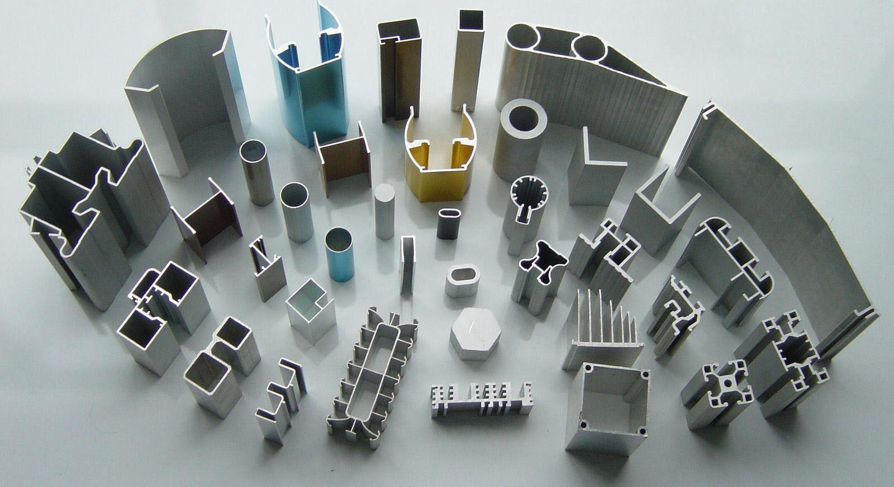 |
| aluminium |
Lightweight and corrosion-resistant metal used in various industries such as aerospace and construction. |
| 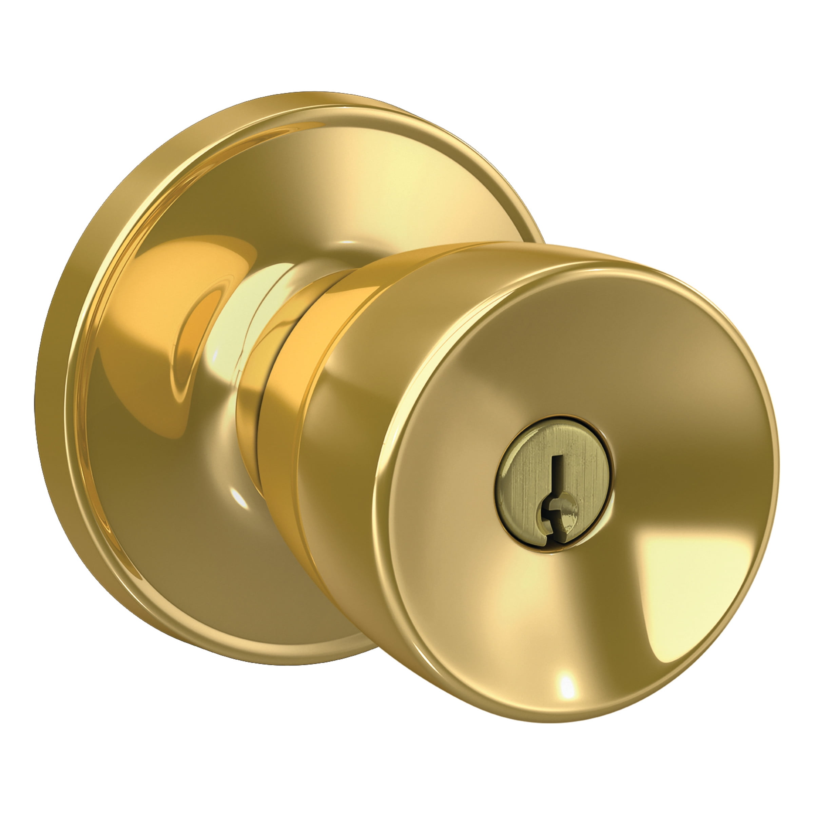 |
| brass |
Alloy of copper and zinc, valued for its decorative properties and used in musical instruments and fittings. |
| 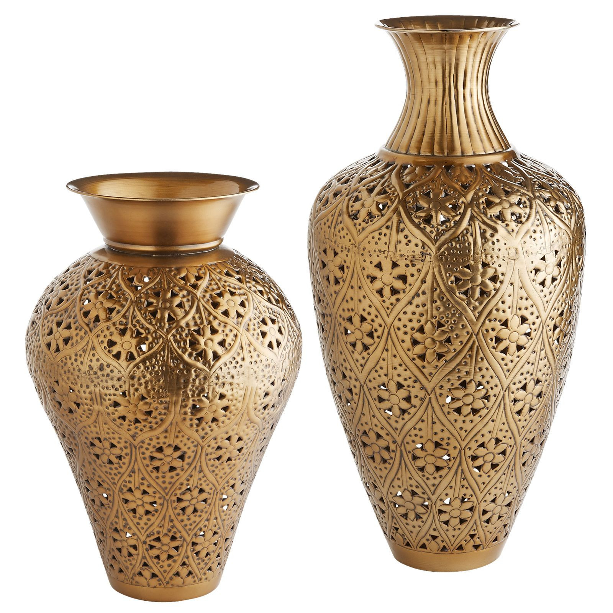 |
| bronze |
Copper-based alloy often containing tin and other elements, known for its strength and used in sculptures and bearings. |
| 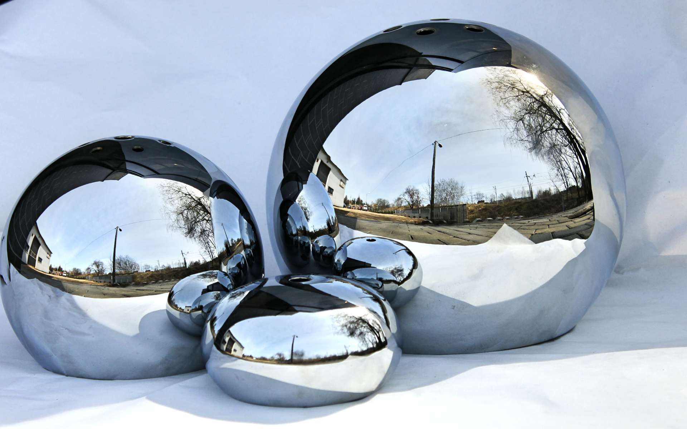 |
| chromium |
Hard and corrosion-resistant metal used in stainless steel production and in plating to improve surface durability. |
| 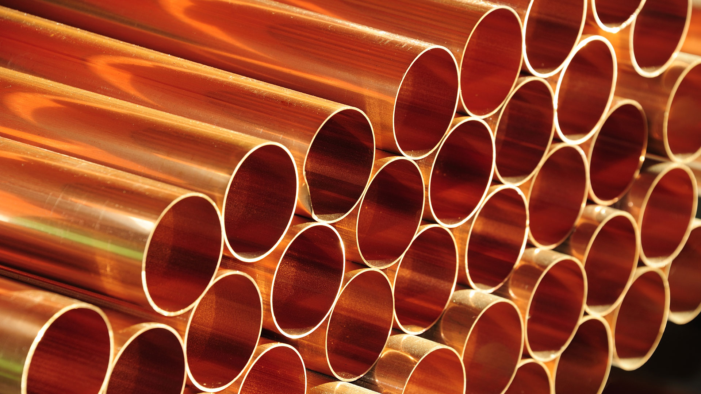 |
| copper |
Highly conductive metal with excellent ductility, widely used in electrical wiring and plumbing. |
| 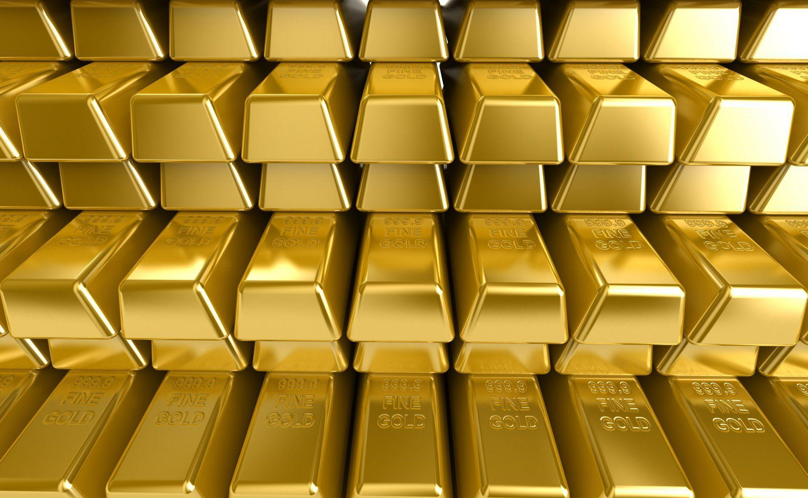 |
| gold |
Valuable metal prized for its rarity and aesthetic appeal, used in jewelry, investment, and electronics. |
| 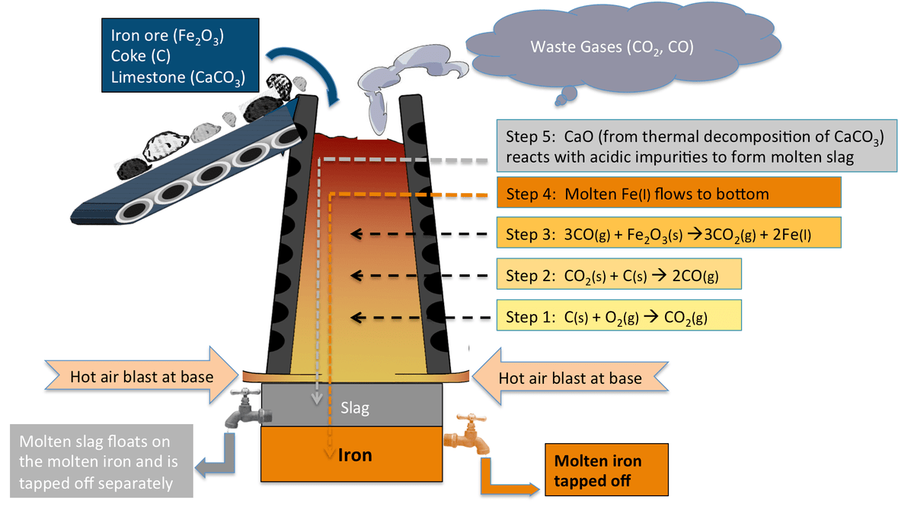 |
| iron |
Abundant metal with high strength and versatility, essential in construction, manufacturing, and transportation. |
| 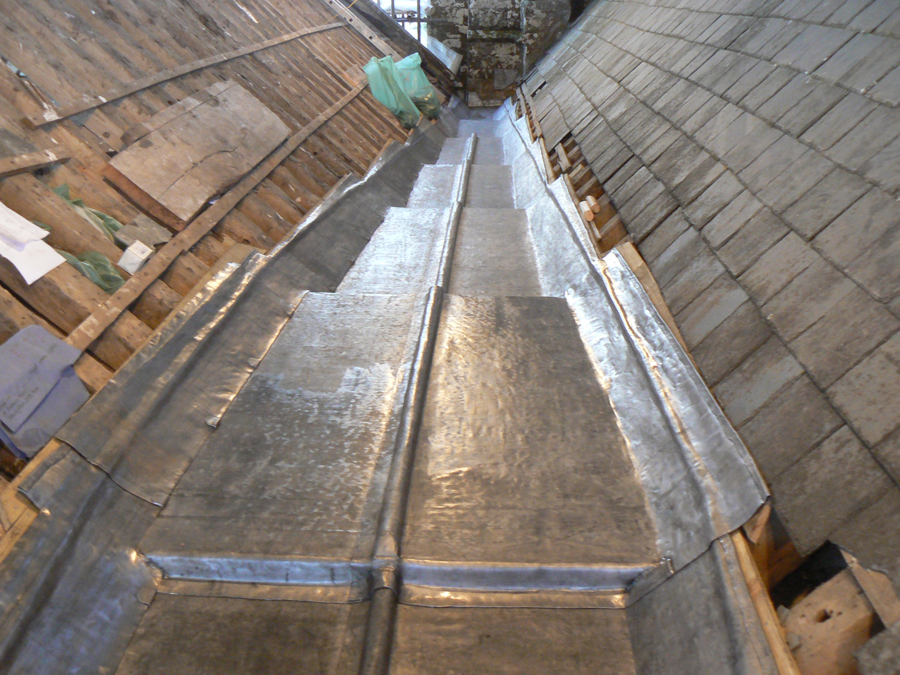 |
| lead |
Dense metal with high malleability and corrosion resistance, used in batteries, construction, and radiation shielding. |
| 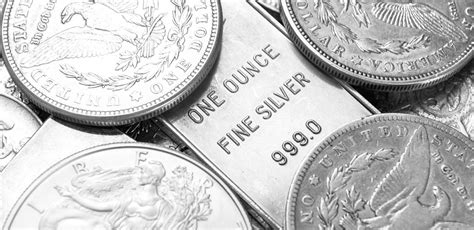 |
| silver |
Highly conductive and malleable metal with antibacterial properties, used in electronics, jewelry, and photography. |
| 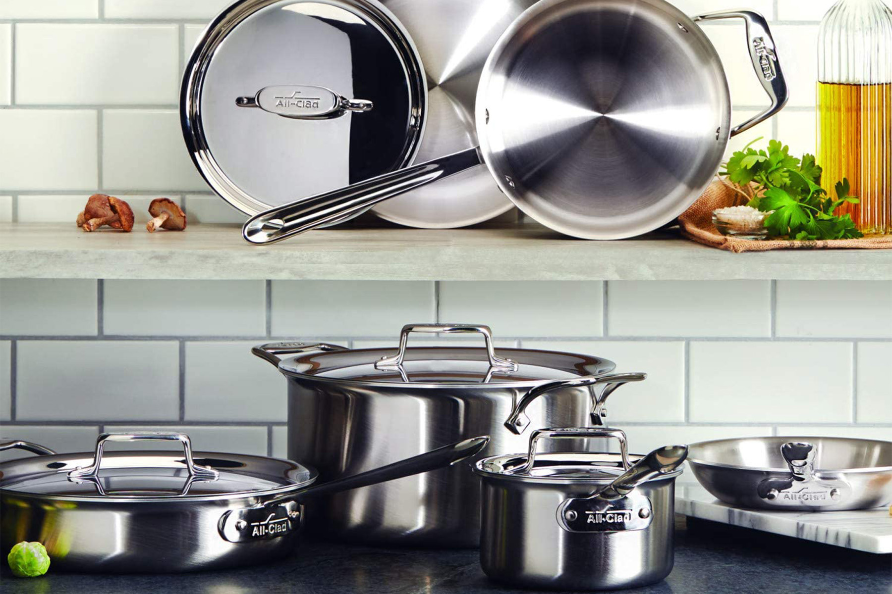 |
| stainless steel |
Steel alloy with a minimum of 10.5% chromium content, resistant to corrosion and widely used in various applications. |
| 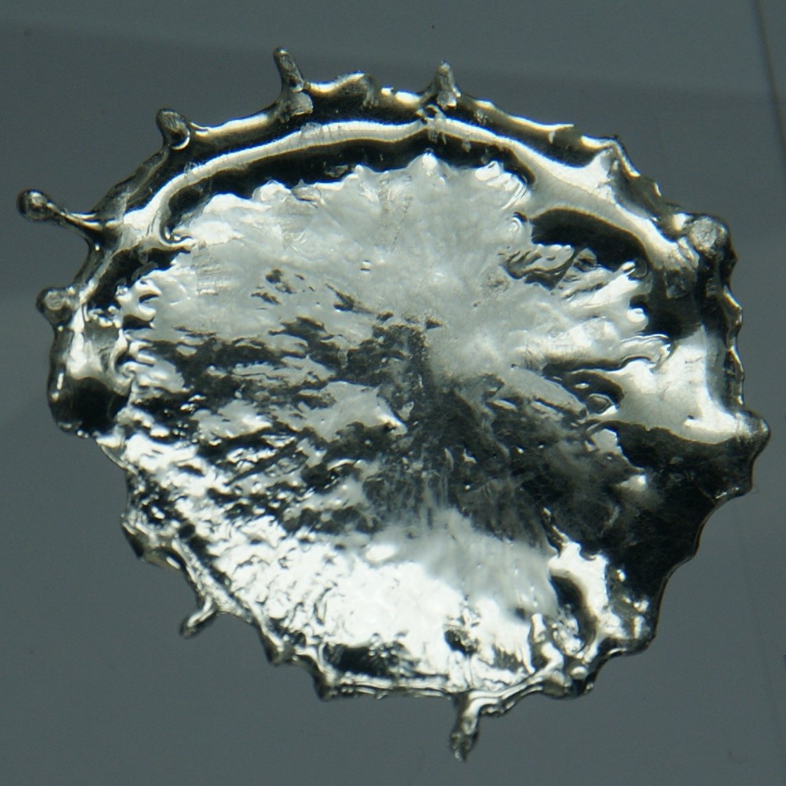 |
| tin |
Malleable metal commonly used as a coating for other materials and in solder for joining metals. |
| 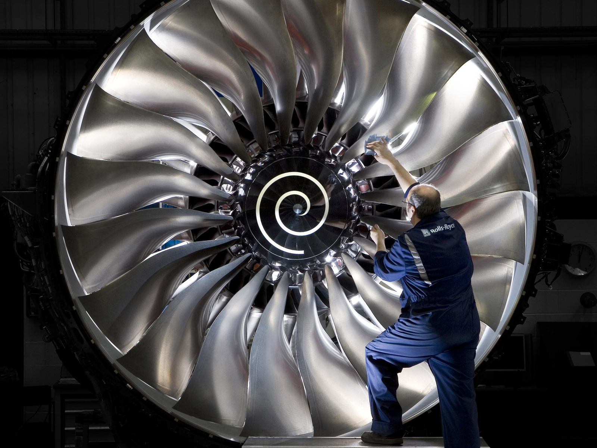 |
| titanium |
Lightweight and strong metal with excellent corrosion resistance, used in aerospace, medical implants, and sporting goods. |
| 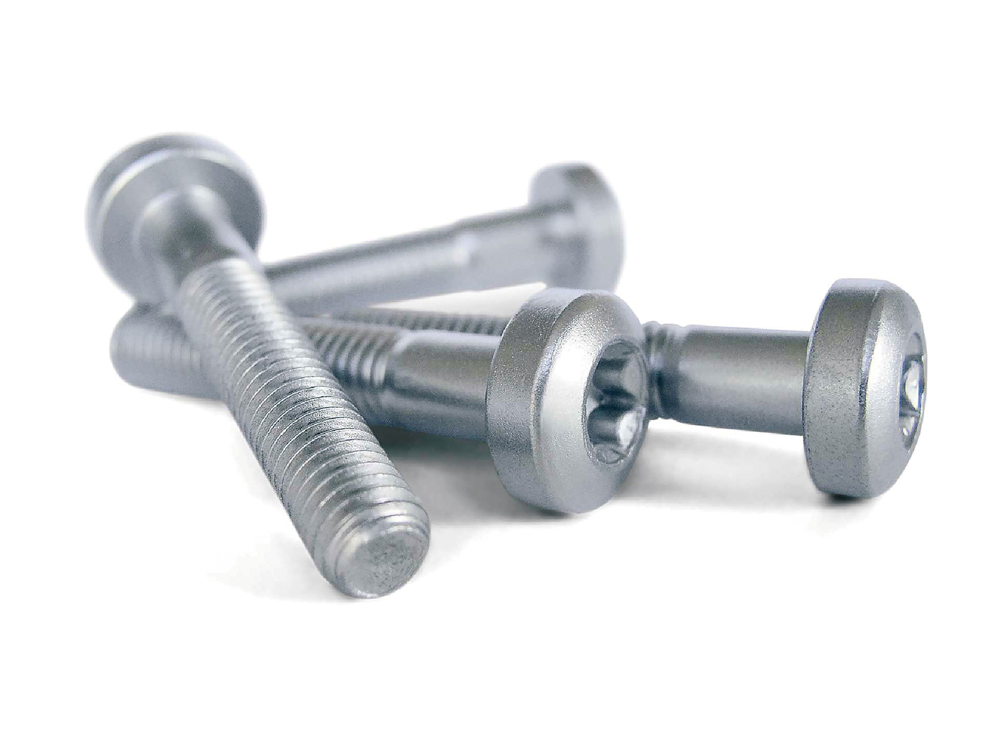 |
| zinc |
Metal with anti-corrosive properties, commonly used in galvanization of steel, batteries, and alloys. |